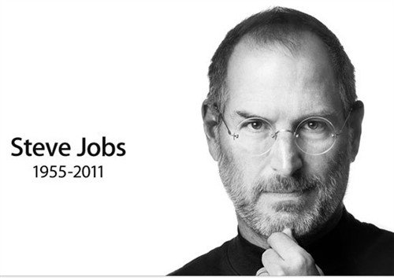
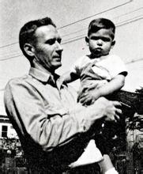

Steve Jobs，史蒂夫·乔布斯
1955年2月24日，史蒂夫.乔布斯生于美国加利福尼亚州旧金山。
2011年10月5日，因胰腺癌病逝，享年56岁。

###被遗弃，被选择，很特别
养父母（保罗和克拉拉）与生父母（乔安妮和钱德里）

他最亲密的朋友们认为，他想完全掌控自己制造的每一样东西的那种强烈的欲望，就来源与他的性格以及刚出生就被抛弃这件事情。
他的朋友安迪.赫茨菲尔德说：他有时会失控般变得残酷并伤害别人，那还要追溯到他一生便被遗弃这件事上，真正的潜在问题是，他的生活中，永远有“被遗弃”在这样一个主题。
但是乔布斯否认了这一点:我从未感觉自己被抛弃过，我一直觉得自己很特别，我的父母让我觉得我很特别。
—–摘自《史蒂夫.乔布斯传》
###别人看不到的地方
虽然有些地方别人看不到，但是也要做的完美，因为你知道它就在那里
###废品店之旅
发电机、化油器、各种各样的原件
擅长讨价还价—交流、交谈
###物美价廉的房子：整洁漂亮、价格低廉、质量优秀
房地产开发商约瑟夫.埃奇勒–“适合美国普通百姓的简单现代之家”。
房屋特点：落地的玻璃墙、开放式的平面设计、无遮蔽的梁柱构造、混凝土地面、大量的滑动玻璃门。
Comments